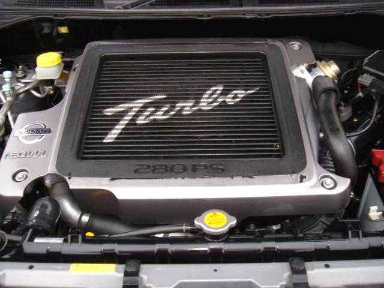

Disponible solo en el mercado japonés es el 2.0 L (1998 cc) SR20VET fue el primer motor turbocargado de Nissan con sincronización variable y control de elevación. Produce 280 CV (206 kW) a 6400 rpm y 309 nm a 3200 rpm con una relación de compresión de 9.0: 1. Se usa en los siguientes vehículos: 2001-2007 Nissan X-Trail GT
